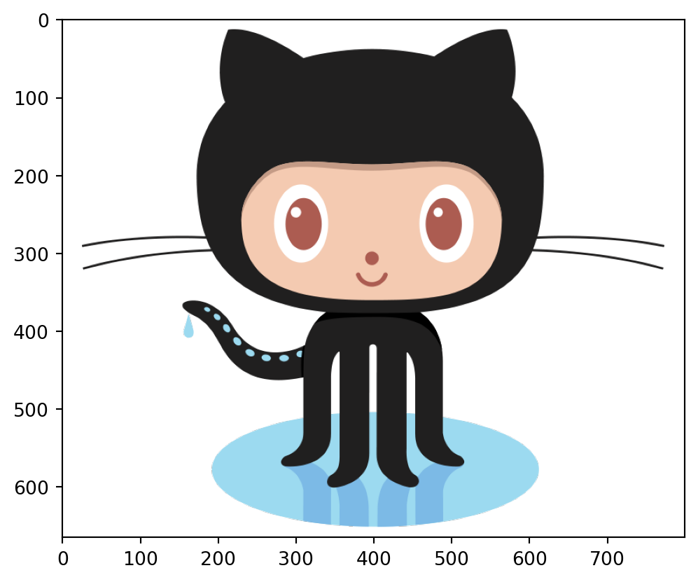

In this notebook we are going to (briefly) look at two key concepts in Python (lists and dictionaries) as well as the basics of something called a package. This will hopefully help a lot with the content over the next three days!
Connections
You will find links here to the Code Camp sessions on Functions and Packages, as well as to this week’s lectures on Functions and Packages.
Lists
Like a list on your phone, a Python list is just an ordered collection of ‘things’. They could be pretty juch any thing. Groceries. Largest Cities in the World. Most famous Indian actors. It doesn’t matter.
# A list is *create* using square brackets with items separated by commasmy_list = ['Apples','Bananas','Lentils','Cleaning supplies',4,'A new hoover']# Basic infoprint(f"Type of my_list is {type(my_list)}")print(f"Length of my_list is {len(my_list)}")print()# The first item in the listprint(my_list[0])print()# The last item in the listprint(my_list[-1])print() # Loop over the listfor i in my_list:print(i)print()# Slightly different loopfor i inrange(0,len(my_list)):print(f"Item {i} is {my_list[i]}")
Type of my_list is <class 'list'>
Length of my_list is 6
Apples
A new hoover
Apples
Bananas
Lentils
Cleaning supplies
4
A new hoover
Item 0 is Apples
Item 1 is Bananas
Item 2 is Lentils
Item 3 is Cleaning supplies
Item 4 is 4
Item 5 is A new hoover
Dictionaries
A dictionary (or ‘dict’ for short) in Python is kind of like a real dictionary: you look up values using a word or other ‘key’!
# A list is *create* using square brackets with items separated by commasmy_dict = {'Apples':'Tasty','Bananas':'Tasty','Lentils':'Tasty','Cleaning supplies':'Not Tasty',4:'Not Tasty','A new hoover':'Not Tasty'}# Basic infoprint(f"Type of my_dict is {type(my_dict)}")print(f"Size of my_dict is {len(my_dict)}")print() # The first item in the listprint(my_dict['Apples'])print()# The last item in the listprint(my_dict['A new hoover'])print() # Loop over the listfor k in my_dict.keys():print(f"{k} has value {my_dict[k]}")
Type of my_dict is <class 'dict'>
Size of my_dict is 6
Tasty
Not Tasty
Apples has value Tasty
Bananas has value Tasty
Lentils has value Tasty
Cleaning supplies has value Not Tasty
4 has value Not Tasty
A new hoover has value Not Tasty
Packages
A package is just some code that someone has written and shared with the rest of the world. Some of these are built into Python, some are ones that we can install ourselves after installing Python. Here we make use of four packages using variations of the import statement…
import urllib.requestfrom PIL import Imagefrom io import BytesIOimport matplotlib.pyplot as plturl ="https://jreades.github.io/jaipur/lectures/img/Octocat.png"# Get the dataresponse = urllib.request.urlopen(url)image_data = response.read()# Load the imageimg = Image.open(BytesIO(image_data))# Display the imageplt.imshow(img)

The Task
Our basic task is to read a CSV file from a server and turn it into ‘data’ that we can use. This might sound hard. It is hard when you’re just starting out in programming. But it is not hard for a computer… iff we can figure out what to tell it to do and make use of work that other people have done for us!
Break Down the Problem
Step 1. Analyse the Problem
We don’t write programs like we write essays: writing a whole lot of code and then hoping for the best when we hit ‘run’. You want to break it down into simple steps, and then tick them off one by one. Doing this gets easier as you become more familiar with programming.
So for this problem we might start with:
We might or might not need all of these steps. Or some steps might be easy, while others are hard! But now we can tackle each of those in turn: get the first bit working, then add the second bit, etc. It’s just like using Lego: you take the same pieces and assemble them in different ways to produce different things.
Step 2. Functions & Packages
Some steps in a program are done so many times by so many people that, eventually, someone writes a package that bundles up those operations into something easy to use. Packages can help us to achieve quite a lot very quickly since we just use someone else’s code. Often, if you’re not sure where to start, Google (or StackOverflow) is the place to go:
So, we are going to download a file, but we aren’t going to do antything else. This is step #1, then we tackle the rest of the steps!
Because we’re accessing data from a ‘URL’ we need to use the urlopenfunction from the urllib.requestpackage. If you’re wondering how we know to use this function and package, you might google something like: read remote csv file python3 which in turn might get you to a StackOverflow question and answer like this.
from urllib.request import urlopenhelp(urlopen)
Help on function urlopen in module urllib.request:
urlopen(url, data=None, timeout=<object object at 0x1035e48c0>, *, cafile=None, capath=None, cadefault=False, context=None)
Open the URL url, which can be either a string or a Request object.
*data* must be an object specifying additional data to be sent to
the server, or None if no such data is needed. See Request for
details.
urllib.request module uses HTTP/1.1 and includes a "Connection:close"
header in its HTTP requests.
The optional *timeout* parameter specifies a timeout in seconds for
blocking operations like the connection attempt (if not specified, the
global default timeout setting will be used). This only works for HTTP,
HTTPS and FTP connections.
If *context* is specified, it must be a ssl.SSLContext instance describing
the various SSL options. See HTTPSConnection for more details.
The optional *cafile* and *capath* parameters specify a set of trusted CA
certificates for HTTPS requests. cafile should point to a single file
containing a bundle of CA certificates, whereas capath should point to a
directory of hashed certificate files. More information can be found in
ssl.SSLContext.load_verify_locations().
The *cadefault* parameter is ignored.
This function always returns an object which can work as a
context manager and has the properties url, headers, and status.
See urllib.response.addinfourl for more detail on these properties.
For HTTP and HTTPS URLs, this function returns a http.client.HTTPResponse
object slightly modified. In addition to the three new methods above, the
msg attribute contains the same information as the reason attribute ---
the reason phrase returned by the server --- instead of the response
headers as it is specified in the documentation for HTTPResponse.
For FTP, file, and data URLs and requests explicitly handled by legacy
URLopener and FancyURLopener classes, this function returns a
urllib.response.addinfourl object.
Note that None may be returned if no handler handles the request (though
the default installed global OpenerDirector uses UnknownHandler to ensure
this never happens).
In addition, if proxy settings are detected (for example, when a *_proxy
environment variable like http_proxy is set), ProxyHandler is default
installed and makes sure the requests are handled through the proxy.
As you can see, there is lot of information here about how things work. A lot of it won’t make much sense at the moment. That’s ok. Some of this doesn’t make much sense to me, but that’s because this is the full documentation trying to cover all the bases. You don’t need to read every line of this, what you are looking is information about things like the ‘signature’ (what parameters the function accepts) and its output. Of course, you can also just Google it!
Tip
Remember that you can use dir(...) and help(...) to investigate what a package offers.
Before you start working on the code, why not open the data file directly in your browser? It’s pretty small, and it will give you a sense of what is going on.
from urllib.request import URLErrorfrom urllib.request import urlopenurl ='https://orca.casa.ucl.ac.uk/~jreades/jaipur/Wikipedia-Cities-simple.csv'# Read the URL into variable called 'response'# using the function that we imported abovetry: response = urlopen(url)except URLError as e:print("Unable to connect to URL!")print(e)# Now read from the stream, decoding so that we get actual textraw = response.read()# You might want to explore what `__class__` and `__name__`# are doing, but basically the give us a way of finding out what# is 'behind' more complex variablesprint(f"'raw' variable is of type: '{raw.__class__.__name__}'.")print(f"Raw content is:\n{raw[:75]}...\n")data = raw.decode('utf-8')print(f"'data' variable is of type: '{data.__class__.__name__}'.")print(f"Decoded content is:\n{data[:75]}...")
'raw' variable is of type: 'bytes'.
Raw content is:
b'City,Population,Latitude,Longitude\r\nPerth,45770,56.39583,-3.43333\r\nArmagh,1'...
'data' variable is of type: 'str'.
Decoded content is:
City,Population,Latitude,Longitude
Perth,45770,56.39583,-3.43333
Armagh,1...
Note
Notice that the raw data has the format b'...' with all of the data seemingly on one line, while the decoded version in data is ‘correctly’ structured with lines! The ‘raw’ data is in bytecode format which is not, strictly, a string. It only becomes a string when we ‘decode it’ to utf-8 (which is the ‘encoding’ of text that supports most human languages). While the computer doesn’t particularly care, we do!
Remember that you can treat strings as lists, so when we print below we cut off the output using the list[:<Some Number>] syntax.
print(f"There are {len(data)} characters in the data variable.")print(f"The first 125 characters are: '{data[:125]}'") # Notice that '\n' count here!
There are 352 characters in the data variable.
The first 125 characters are: 'City,Population,Latitude,Longitude
Perth,45770,56.39583,-3.43333
Armagh,14777,54.3499,-6.6546
Dundee,147268,56.462,-2.9707'
So this is definitely text, but it doesn’t (yet) look entirely like the data we see because it’s still just one long string, and not data which has individual records on each line. To split the text into individual lines, we can use the handily named .splitlines() method (more on methods below):
rows = data.splitlines()print(f"'rows' variable is of type: {rows.__class__.__name__}'.")
'rows' variable is of type: list'.
Note now, how the data variable has type list. So to view the data as we see them in the original online file, we can now use a for loop to print out each element of the list (each element being a row of the original online file):
print(f"There are {len(rows)} rows of data.")print("\n".join(rows[0:2])) # New syntax alert! notice we can *join* list elements
There are 11 rows of data.
City,Population,Latitude,Longitude
Perth,45770,56.39583,-3.43333
That’s a little hard to read, though something has clearly changed. Let’s try printing the last row:
print(rows[-1])
Bangor,18808,53.228,-4.128
Congratulations! You’ve now read a text file sitting on a server in, I think, Canada and Python didn’t care. You’ve also converted a plain-text file to a row-formatted list.
Text into Data
We now need to work on turning the list into useful data. We got partway there by splitting on line-breaks (splitlines()), but now we need to get columns for each line. You’ll notice that we are dealing with a CSV (Comma-Separated Value) file and that the format looks quite simple… So, in theory, to turn this into data we ‘just’ need to split each row into separate fields using the commas.
There’s a handy function associated with strings called split:
test = rows[-1].split(',')print(test)print(f"The population of {test[0]} is {int(test[1]):,}")
['Bangor', '18808', '53.228', '-4.128']
The population of Bangor is 18,808
I’d say that we’re now getting quite close to something that looks like ‘real data’: I know how to convert a raw response from a web server into a string, to split that string into rows, and can even access individual elements from a row!
The Advantages of a Package
There are two problems to the data.splitlines() and row.split(',') approach! One of them is visible (though not obvious) in the examples above, the other is not.
10 and '10' are not the same thing. To comma-format the population of Sheffield you’ll see that I had to do int(...) in order to turn '685368' into a number. So our approach so far doesn’t know anything about the type of data we’re working with.
We are also implicitly assuming that commas can only appear at field boundaries (i.e. that they can only appear to separate one column of data from the next). In other words, just using split(',') doesn’t work if any of the fields can themselves contain a comma!
There’s actually a third potential issue, but it’s so rare that we would need to take a completely different approach to deal with it: we are also assuming that newlines (\n) can only appear at record boundaries (i.e. that the can only appear to separate one row of data from the next). In those cases, using splitlines() also doesn’t work, but this situation is (thankfully) very rare indeed.
This is where using code that someone else who is much more interested (and knowledgeable) has written and contributed is helpful: we don’t need to think through how to deal with this sort of thing ourselves, we can just find a library that does what we need and make use of its functionality. I’ve given you the skeleton of the answer below, but you’ll need to do a little Googling to find out how to "read csv python".
Note: For now just focus on problem #2.
from urllib.request import urlopenimport csvresponse = urlopen(url)raw = response.read()# Now take the raw data, decode it, and then# pass it over to the CSV reader functioncsvfile = csv.reader(raw.decode('utf-8').splitlines()) urlData = [] # Somewhere to store the datafor row in csvfile: urlData.append( row )print("urlData has "+str(len(urlData)) +" rows and "+str(len(urlData[0])) +" columns.")print(urlData[-1]) # Check it worked!
urlData has 11 rows and 4 columns.
['Bangor', '18808', '53.228', '-4.128']
If it worked, then you should have this output:
urlData has 11 rows and 4 columns.
['Bangor', '18808', '53.228', '-4.128']
To you that might look a lot worse that the data that you originally had, but to a computer that list-of-lists is something it can work with; check it out:
for u in urlData[1:6]: # For each row in the first 5 items in listprint(f"The city of '{u[0]}' has a population of {int(u[1]):,}") # Print out the name and pop
The city of 'Perth' has a population of 45,770
The city of 'Armagh' has a population of 14,777
The city of 'Dundee' has a population of 147,268
The city of 'Colchester' has a population of 194,706
The city of 'Salisbury' has a population of 40,302
Note
Why did I use urlData[1:] instead of urlData?
If you print urlData[0] you’ll see that this is the ‘header’ row that tells us what each column contains! So if we try to convert the column name to an integer (int(u[1])) we will get an error!
The advantage of using the csv library over plain old string.split is that the csv library knows how to deal with fields that contain commas (e.g."Cardfiff, Caerdydd" or "An Amazing 4 Bedroom Home, Central London, Sleeps 12") and so is much more flexible and consistent that our naive split approach.
Let’s try this with a ‘bigger’ data set… In an ideal world, the ‘power’ of code is that once we’ve solved the problem once, we’ve solved it more generally as well. So let’s try with the ‘scaled-up’ data set and see waht happens!
from urllib.request import urlopenimport csvurl ="https://orca.casa.ucl.ac.uk/~jreades/jaipur/Wikipedia-Cities.csv"response = urlopen(url)raw = response.read()csvfile = csv.reader(raw.decode('utf-8').splitlines())urlData = [] # Somewhere to store the datafor row in csvfile: urlData.append( row )print(f"urlData has {len(urlData)} rows and {len(urlData[0])} columns.")for u in urlData[70:]: # For each row in the listprint(f"The city of '{u[0]}' has a population of {u[1]}") # Print out the name and pop
urlData has 75 rows and 7 columns.
The city of 'Winchester' has a population of South East
The city of 'Wolverhampton' has a population of West Midlands
The city of 'Worcester' has a population of West Midlands
The city of 'Wrexham, Wrecsam' has a population of Wales
The city of 'York' has a population of Yorkshire and the Humber
What mistake have I made here?
I have assumed that, just because the files have similar names, they must also have similar layouts!
print(f"The URL's data labels are: {', '.join(urlData[0])}")
The URL's data labels are: City, Region, Founded, Population, URL, Longitude, Latitude
Insight!
So, although the code was basically the same for both of these files (good), we would need to change quite a bit in order to print out the same information from different versions of the same data. So our code is rather brittle.
One of the issues is that our instincts about how to manage data doesn’t align with how the computer can most efficiently manage it. We make the mistake of thinking that the computer needs to do things that same way that we do when reading text and so assume that we need to:
Represent the rows as a list.
Represent the columns as a list for each row.
This thinking suggests that the ‘right’ data structure would clearly be a list-of-lists (LoLs!), but if you understand what happened here then the next section will make a lot more sense!
Why ‘Obvious’ is Not Always ‘Right’
🔗 Connections
This section builds on the material covered by the DOLs to Data lecture.
Difficulty: Hard.
But you need to be careful assuming that, just because something is hard for you to read, it’s also hard for a computer to read! The way a computer ‘thinks’ and the way that we think doesn’t always line up naturally. Experienced programmers can think their way around a problem by working with the computer, rather than against it.
Some issues to consider:
Is the first row of data actually data, or is it about data?
Do we really care about column order, or do we just care about being able to pick the correct column?
Let’s apply this approach to the parsing of our data…
Understanding What’s an ‘Appropriate’ Data Structure
If you stop to think about it, then our list-of-lists approach to the data isn’t very easy to navigate. Notice that if the position or name of a column changes then we need to change our program every time we re-run it! It’s not very easy to read either since we don’t really know what u[5] is supposed to be. That way lies all kinds of potential errors!
Also consider that, in order to calculate out even a simple aggregate such as the sum of a field for all rows we need to step through a lot of irrelevant data as well: we have to write a for loop and then step through each row with an ‘accumulator’ (somewhere to store the total). That’s slow.
That doesn’t make much sense since this should all be easier and faster in Python than in Excel, but right now it’s harder, and quite possibly slower as well! So how does the experienced programmer get around this? ‘Simple’ (i.e. neither simple, nor obvious, until you know the answer): she realises that the data is organised the wrong way! We humans tend to think in rows of data: this apartment has the following attributes (price, location, etc.), or that city has the following attributes (population, location). We read across the row because that’s the easiest way for us to think about it. But, in short, a list-of-lists does not seem to be the right way to store this data!
Crucially, a computer doesn’t have to work that way. For a computer, it’s as easy to read down a column as it is to read across a row. In fact, it’s easier, because each column has the same type of data: one column contains names (strings), another column contains prices (integers), and other columns contain other types of data (floats, etc.). Better still, the order of the columns often doesn’t matter as long as we know what the columns are called: it’s easier to ask for the ‘description column’ than it is to ask for the 6th column since, for all we know, the description column might be in a different place for different files but they are all (relatively) likely to use the ‘description’ label for the column itself.
A Dictionary of Lists to the Rescue
So, if we don’t care about column order, only row order, then a dictionary of lists would be a nice way to handle things. And why should we care about column order? With our CSV files above we already saw what a pain it was to fix things when the layout of the columns changed from one data set to the next. If, instead, we can just reference the ‘description’ column then it doesn’t matter where that column actually is. Why is that?
Well, here are the first four rows of data from a list-of-lists for city sizes:
What does this do better? Well, for starters, we know that everything in the ‘Name’ column will be a string, and that everything in the ‘Longitude’ column is a float, while the ‘Population’ column contains integers. So that’s made life easier already, but the real benefit is coming up…
Behold the Power of the DoL
Now let’s look at what you can do with this… but first we need to import one more package that you’re going to see a lot over the rest of term: numpy (Numerical Python), which is used so much that most people simply refer to it as np. This is a huge package in terms of features, but right now we’re interested only in the basic arithmatic functions: mean, max, and min.
We’ll step through most of these in detail below.
Find the latitude of Manchester:
city ="Manchester"lat = myData['Latitude'][ myData['Name'].index(city) ]print(f"{city}'s latitude is {lat}")
Manchester's latitude is 53.479
Print the location of Lerwick:
city ="Lerwick"print(f"The town of {city} can be found at "+f"{abs(myData['Longitude'][myData['Name'].index(city)])}ºW, {myData['Latitude'][myData['Name'].index(city)]}ºN")
The town of Lerwick can be found at 1.145ºW, 60.155ºN
Find the easternmost city:
city = myData['Name'][ myData['Longitude'].index( max(myData['Longitude']) ) ]print(f"The easternmost city is: {city}")
The easternmost city is: London
Find the mean population of the cities using a handy package called numpy:
import numpy as npmean = np.mean(myData['Population'])print(f"The mean population is: {mean}")
The mean population is: 2435442.5
Warning
Stop! Look closely at what is going on. There’s a lot of content to process in the code above, so do not rush blindly on if this is confusing. Try pulling it apart into pieces and then reassemble it. Start with the bits that you understand and then add complexity.
We’ll go through each one in turn, but they nearly all work in the same way and the really key thing is that you’ll notice that we no longer have any loops (which are slow) just index or np.<function> (which is very fast).
The Population of Manchester
The code can look pretty daunting, so let’s break it down into two parts. What would you get if you ran just this code?
myData['Population'][1]
2705000
Remember that this is a dictionary-of-lists (DoL). So, Python first looks for a key named Population in the myData dictionary. It finds out that the value associated with this key is a list and in this example, it just pulls out the second value (index 1). Does that part make sense?
Now, to the second part:
myData['Name'].index('Manchester')
1
Here we look in the dictionary for the key Name and find that that’s also a list. All we’re doing here is asking Python to find the index of ‘Manchester’ for us in that list. And myData['Name'].index('Manchester') gives us back a 1, so instead of just writing myData['Population'][1] we can replace the 1 with myData['Name'].index('Manchester')! Crucially, notice the complete absence of a for loop?
Does that make sense? If it does then you should be having a kind of an 🤯 moment because what we’ve done by taking a column view, rather than a row view, is to make Python’s index() command do the work for us. Instead of having to look through each row for a field that matches ‘Name’ and then check to see if it’s ‘Manchester’, we’ve pointed Python at the right column immediately and asked it to find the match (which it can do very quickly). Once we have a match then we also have the row number to go and do the lookup in the ‘Population’ column because the index is the row number!
The Easternmost City
Where this approach really comes into its own is on problems that involve maths. To figure out the easternmost city in this list we need to find the maximum Longitude and then use that value to look up the city name. So let’s do the same process of pulling this apart into two steps. Let start with the easier bit:
myData['Name'][0]
'London'
That would give us the name of a city, but we don’t just want the first city in the list, we want the one with the maximum longitude. To achieve that we need to somehow replace the 0 with the index of the maximum longitude. Let’s break this down further:
We first need to find the maximum longitude.
We then need to find the index of that maximum longitude.
So Step 1 would be:
max_lon =max(myData['Longitude'])
Because the max(...) helps us to find the maximum longitude in the Longitude list. Now that we have that we can proceed to Step 2:
myData['Longitude'].index(max_lon)
0
So now we ask Python to find the position of max_lon in the list. But rather than doing this in two steps we can combine into one if we write it down to make it easier to read:
There’s the same .index which tells us that Python is going to look for something in the list associated with the Longitude key. All we’ve done is change what’s inside that index function to max(myData['Longitude']). This is telling Python to find the maximum value in the myData['Longitude'] list. So to explain this in three steps, what we’re doing is:
Finding the maximum value in the Longitude column (we know there must be one, but we don’t know what it is!),
Finding the index (position) of that maximum value in the Longitude column (now that we know what the value is!),
Using that index to read a value out of the Name column.
I am a geek, but that’s pretty cool, right? In one line of code we managed to quickly find out where the data we needed was even though it involved three discrete steps. Think about how much work you’d have to do if you were still thinking in rows, not columns!
The Location of Lerwick
Lerwick is a small town in the Shetlands, way up to the North of mainland U.K. and somewhere I’ve wanted to go ever since I got back from Orkney–but then I spent my honeymoon in the far North of Iceland, so perhaps I just don’t like being around lots of people… 🙃
Anyway, this one might be a tiny bit easier conceptually than the other problems, except that I’ve deliberately used a slightly different way of showing the output that might be confusing:
Print the location of Lerwick:
city ="Lerwick"print(f"The town of {city} can be found at "+f"{abs(myData['Longitude'][myData['Name'].index(city)])}ºW, {myData['Latitude'][myData['Name'].index(city)]}ºN")
The town of Lerwick can be found at 1.145ºW, 60.155ºN
The first thing to do is to pull apart the print statement: you can see that this is actually just two ‘f-strings’ joined by a +–having that at the end of the line tells Python that it should carry on to the next line. That’s a handy way to make your code a little easier to read. If you’re creating a list and it’s getting a little long, then you can also continue a line using a , as well!
1. The first f-string
The first string will help you to make sense of the second: f-strings allow you to ‘interpolate’ a variable into a string directly rather than having to have lots of str(x) + " some text " + str(y). You can write f"{x} some text {y}" and Python will automatically convert the variables x and y to strings and replace {x} with the value of x and {y} with the value of y.
So here f"The town of {city} can be found at " becomes f"The town of Lerwick can be found at " because {city} is replaced by the value of the variable city. This makes for code that is easier for humans to read and so I’d consider that a good thing.
2. The second f-string
This one is hard because there’s just a lot of code there. But, again, if we start with what we recognise that it gets just a little bit more manageable… Also, it stands to reason that the only difference between the two outputs is that one asks for the ‘Longitude’ and the other for the ‘Latitude’. So if you can make sense of one you have automatically made sense of the other and don’t need to work it all out.
Let’s start with a part that you might recognise:
myData['Name'].index(city)
5
You’ve got this. This is just asking Python to work out the index of Lerwick (because city = 'Lerwick'). So it’s a number. 5 in this case. And we can then think, ’OK so what does this return:
myData['Longitude'][5]
-1.145
And the answer is -1.145. That’s the Longitude of Lerwick! There’s just one last thing: notice that we’re talking about degrees West here. So the answer isn’t a negative (because negative West degrees would be East!), it’s the absolute value. And that is the final piece of the puzzle: abs(...) gives us the absolute value of a number!
help(abs)
Help on built-in function abs in module builtins:
abs(x, /)
Return the absolute value of the argument.
The Average City Size
Here we’re going to ‘cheat’ a little bit: rather than writing our own function, we’re going to import a package and use someone else’s function. The numpy package contains a lot of useful functions that we can call on (if you don’t believe me, add “dir(np)” on a new line after the import statement), and one of them calculates the average of a list or array of data.
print(f"The mean population is {np.mean(myData['Population'])}")
The mean population is 2435442.5
This is where our new approach really comes into its own: because all of the population data is in one place (a.k.a. a series or column), we can just throw the whole list into the np.mean function rather than having to use all of those convoluted loops and counters. Simples, right?
No, not simple at all, but we’ve come up with a way to make it simple.
Recap!
So the really clever bit in all of this isn’t switching from a list-of-lists to a dictionary-of-lists, it’s recognising that the dictionary-of-lists is a better way to work with the data that we’re trying to analyse and that that there are useful functions that we can exploit to do the heavy lifting for us. Simply by changing the way that we stored the data in a ‘data structure’ (i.e. complex arrangement of lists, dictionaries, and variables) we were able to do away with lots of for loops and counters and conditions, and reduce many difficult operations to something that could be done on one line!
Brain Teaser
Difficulty: 🤯.
Why not have a stab at writing the code to print out the 4th most populous city? This can still be done on one line, though you might want to start by breaking the problem down:
How do I find the 4th largest value in a list?
How do I find the index of the 4th largest value in a list?
How do I use that to look up the name associated with that index?
You’ve already done #2 and #3 above so you’ve solved that problem. If you can solve #1 then the rest should fall into place.
Tip
You don’t want to use <list>.sort() because that will sort your data in place and break the link between the indexes across the ‘columns’; you want to research the function sorted(<list>) where <list> is the variable that holds your data and sorted(...) just returns whatever you pass it in a sorted order without changing the original list. You’ll see why this matters if you get the answer… otherwise, wait a few days for the answers to post.
Appending a Column
Calculate Mean
Let’s start by calculating the sample mean (use Google: Python numpy mean...):
import numpy as np# Use numpy functions to calculate mean and standard deviationmean = np.mean(myData['Population'])print(f"City distribution has a mean of {mean:,.0f}.")
City distribution has a mean of 2,435,442.
Calculate Standard Deviation
Now let’s do the standard deviation:
# Use numpy functions to calculate mean and standard deviationstd = np.std(myData['Population'])print(f"City distribution has a standard deviation of {std:,.2f}.")
City distribution has a standard deviation of 3,406,947.93.
So the numpy package gives us a way to calculate the mean and standard deviation quickly and without having to reinvent the wheel. The other potentially new thing here is {std:,.2f}. This is about string formatting and the main thing to recognise is that this means ‘format this float with commas separating the thousands/millions and 2 digits to the right’. The link I’ve provided uses the slightly older approach of <str>.format() but the formatting approach is the same.
For Loops Without For Loops
Difficulty level: Medium.
Now we’re going to see something called a List Comprehension.
In Python you will see code like this a lot: [x for x in list]. This syntax is known as a ‘list comprehension’ and is basically a for loop on one line with the output being assigned to a list. So we can apply an operation (converting to a string, subtracting a value, etc.) to every item in a list without writing out a full for loop.
Here’s a quick example just to show you what’s going on:
demo =range(0,10) # <- a *range* of numbers between 0 and 9 (stop at 10)print([x**2for x in demo]) # square every element of demo
[0, 1, 4, 9, 16, 25, 36, 49, 64, 81]
Now let’s apply this to our problem. We calculated the the mean and standard deviation above, so now we want to apply the z-score formula to every element of the Population list… Remember that the format for the z-score (when dealing with a sample) is:
\[
z = \frac{x - \bar{x}}{s}
\]
And the population standard deviation (by which I mean, if you are dealing with all the data, and not a subsample as we are here) is:
\[
z = \frac{x - \mu}{\sigma}
\]
rs = [(x - mean)/std for x in myData['Population']] # rs == result setprint([f"{x:.3f}"for x in rs])
And just to show how everything is in a single data structure:
for c in myData['Name']: idx = myData['Name'].index(c)print(f"{c} has a population of {myData['Population'][idx]:,} and standardised score of {myData['Std. Population'][idx]:.3f}")
London has a population of 9,787,426 and standardised score of 2.158
Manchester has a population of 2,705,000 and standardised score of 0.079
Birmingham has a population of 1,141,816 and standardised score of -0.380
Edinburgh has a population of 901,455 and standardised score of -0.450
Inverness has a population of 70,000 and standardised score of -0.694
Lerwick has a population of 6,958 and standardised score of -0.713